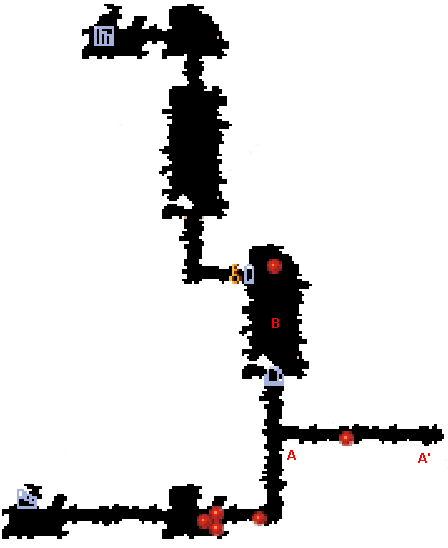
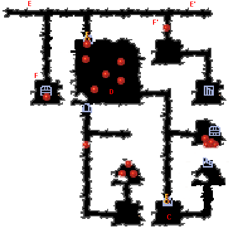
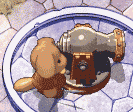
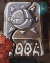
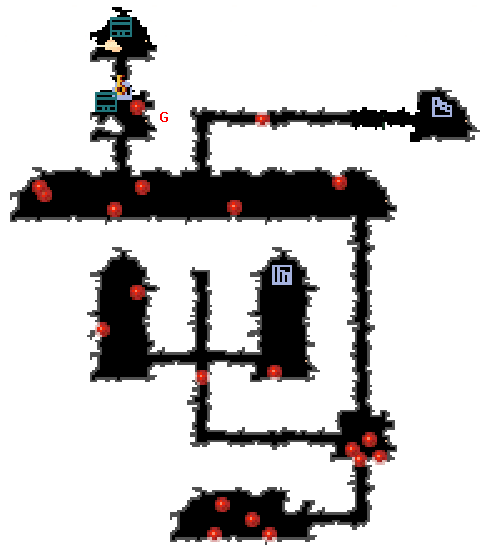

| 概要 | 情報 | アイテム一覧 |
| 敵キャラ一覧 | ステージ一覧 | 夢幻迷宮について |
| 攻略チャート | Zwei!! 攻略へ |
| ステージ選択へ |
ケノーピ火山 Lv.12
|  | |
| A | A-A'間はトゲが移動しています。 ぶつからないようにしましょう。 |
| B | B地点はトゲが移動しています。 かなり慎重に移動しないと、余計なダメージを受けます。 |
|  | |
C |
C地点にはボタンスイッチがあります。 スイッチをONにすると、トゲが現れるので注意しましょう。 |
| D  |
部屋Dではこぼるとが大砲を持って待ちかまえています。 ピピロの属性魔法で対処しましょう。 |
| E | E-E'間はトゲが移動しています。 ぶつからないようにしましょう。 |
| F  |
F、F'地点にはプッシュの手袋でしか動かせないブロックがあります。 まずはピピロの属性魔法で敵を倒したり、ツボを壊したりしてから、ポックルに動かすように指示しましょう。 |
|  | |
G |
G地点にはZONYタイマーがあります。 このタイマーは敵を倒すごとにカウントが増えます。 |
| ステージ選択へ |
| 概要 | 情報 | アイテム一覧 |
| 敵キャラ一覧 | ステージ一覧 | 夢幻迷宮について |
| 攻略チャート | Zwei!! 攻略へ |
Zwei!!
| 目次へ戻る | ページの上部へ |